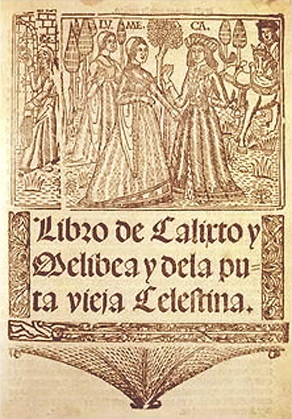
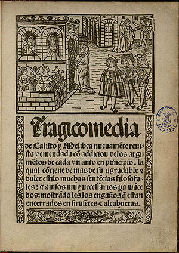
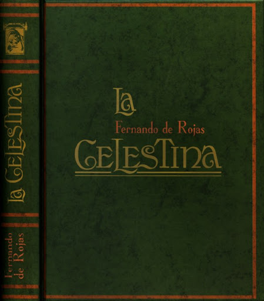

Este libro fue comenzado por un autor anonimo, esto se hace saber cuando el segundo autor Fernando de Rojas lo dice y no se roba el credito. EL segundo escritor, autor de La Celestina. Fernando de Rojas venia de una familia de judios conversos. Estudió derecho en Salamanca y gracias a esto estuvo tres años obligatorios en la Facultad de Artes. Se pienza que gracias a esto conoció los clásicos latinos y la filosofía griega. Luego de muchos años estudiando leyes empezo a estudiar para ser abogado y llego a ser alcalde en donde vivia. No se sabe con mucha serteza pero se cree que su primer edicion de La Celestian en el año 1499. Esta edicion se llamaba La Comedia de Calisto y Melibea. Luego en 1502 sacaron otras ediciones tituladas La Tragicomedia de Calsito y Melibea
A lo largo de las tants ediciones del siglo 16, el libro sufrió muchos cambios y cosas agregadas, probablemente no escrito pot Fernando de Rojas. Esto mas o menos desde la quinta edicion que lo empezaron a llamar la Tragicomedia de Calisto y Melibea a principios de siglo 16. El nombre que el primer autor le otrogo a la obra tenia que ver con una comedia pero muchos lectores peliaron ya que preferian que el nombrte de la novela tubiese que ver de el amor entre Calisto y Melibea. Pronto se obvió el de Tragicomedia y empezó a llamarse Celestina o La Celestina al libro destinado a ser uno de los más famosos de la literatura universal. Muchos distintos autores lo consideraron como el mejor libro español después de Don Quijote de la Mancha.
  